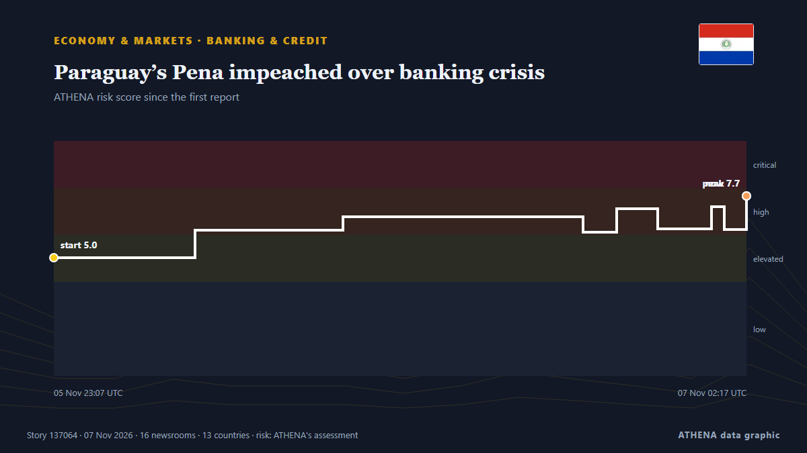

Banca y crédito
PatrocinadoPresentado por  Cybernetics and Artificial Intelligence Lab Welcome to the Cybernetics and Artificial Intelligence Laboratory, established at the Department of Business Administration of the National and Kapodistrian University of Athens. The lab is headed by Professor Dimitrios Thomakos. The lab aims to do research that can be published in top venues. Our research uses tools and methods of Artificial Intelligence, and lies in the following areas: - Forecasting - Decision making - Cyber security - Finance We are always looking forward to collaborating with exceptional students!
Cybernetics and Artificial Intelligence Lab Welcome to the Cybernetics and Artificial Intelligence Laboratory, established at the Department of Business Administration of the National and Kapodistrian University of Athens. The lab is headed by Professor Dimitrios Thomakos. The lab aims to do research that can be published in top venues. Our research uses tools and methods of Artificial Intelligence, and lies in the following areas: - Forecasting - Decision making - Cyber security - Finance We are always looking forward to collaborating with exceptional students!
| 25 oct | 0 |
|---|---|
| 26 oct | 0 |
| 27 oct | 0 |
| 28 oct | 0 |
| 29 oct | 0 |
| 30 oct | 0 |
| 31 oct | 0 |
| 1 nov | 0 |
| 2 nov | 0 |
| 3 nov | 7 |
| 4 nov | 6 |
| 5 nov | 8 |
| 6 nov | 3 |
| 7 nov | 0 |
Los titulares se muestran en inglés, tal como se publicaron.

Paraguay’s Pena impeached over banking crisis
Santiago Pena had offered his resignation, but lawmakers pressed ahead with impeachment proceedings to strip him of the immunity granted to former presidents. de Free Malaysia Today
GUTA Raises Concern Over Chinese Shopping Malls, Says They Are Taking 60% of Ghana’s Market Share
By: Marcella Mwinkoma Babing The President of the Ghana Union of Traders’ Associations (GUTA), Clement Boateng, has raised concerns over the growing presence of Chinese-owned shopping malls in Ghana… de GBC Ghana Online
Anti-Money Laundering Authority clears way for Pizza Fan stores to reopen
Under an order issued by Charalambos Vourliotis, two bank accounts have been unfrozen to meet financial obligations not only to employees but also to other creditors of the chain’s remanded owner. de ProtoThema English
Cyberattack Hits French Blood Bank Site but No Blood Products Are Compromised
A cyberattack on several blood banks tried to raise temperatures to extremely high levels but was thwarted before it could do any damage to blood products or samples, French authorities said. de Korea Herald
IFC, Access Holdings partner to boost trade finance across Africa
.partnership targets businesses, cross-border trade, access to global marketsBy Udeme AkpanThe International Finance Corporation (IFC), a member of the World Bank Group, and Access Holdings Plc have… de Vanguard
French bank Credit Mutuel Arkea says €100 million missing after cyberattack
French lender Credit Mutuel Arkea said on Thursday hackers had stolen around €100 million ($112.61 million) in a cyber heist and it was working to try to recover the money, in a rare case of… de Insurance Journal
TADB cherishes its role in financing agriculture, livestock, fisheries while empowering SMEs
DODOMA: THE Tanzania Agricultural Development Bank (TADB) continues to demonstrate its role as a key player in national economic development through financing agriculture, livestock and fisheries… de Daily News
Developing countries’ external debt hits record $9.4tn — World Bank
Cost of servicing external debt is preventing developing countries from investing for future Debt owed by developing countries rose to a record $9.4tn (£7tn) last year, with the poorest paying the… de Guardian Business
Korea Eximbank commits $170m to Tanzania's first EDCF AI project
The Export-Import Bank of Korea will provide a $170 million loan to build an artificial intelligence education center in Tanzania, marking the first AI project financed through South Korea's Economic… de Korea Herald
GhostMap Android flaw lets malicious app trigger persistent boot loop
Attackers can force Android devices into a continuous boot loop using a specially crafted app that requires no permissions and only needs to be installed. de BleepingComputer
World Bank: How corruption is holding back Kenya’s economic potential
Corruption is costing Kenya more than public money lost through questionable deals. de People Daily
Israel kills Palestinian in Gaza, seizes eight homes in occupied West Bank
Israeli attacks target several areas of Gaza as Palestinian authorities report new homes and more than 620 acres of land near Ramallah seizures in occupied West Bank. de TRT World
Citi employee killed in shooting at Florida office, suspect dead
A sheriff said 365 deputies had responded to the incident and that he believed it was a targeted one. de The Straits Times
USP appoints Patricia Naisara to Executive role
The University of the South Pacific has appointed Patricia Naisara as its new Executive Director, People and Workforce Strategy. de FBC News
El Niño Is Already Cutting Costa Rica’s Coffee Harvest by Up to 15%
Coffee growers expect a 10-15% smaller harvest as El Niño hits rice, bananas, melons and cattle, and the Central Bank sees farm output shrinking in 2027. de The Tico Times
Palestinian families return home after Israeli siege of Hebron
Speaking to The New Arab, several residents said money, gold jewellery and household items, including children's toys and piggy banks, were missing. de The New Arab
Belgrade Commercial Court Opens Bankruptcy Proceedings Against Alta Banka
The Commercial Court in Belgrade opened bankruptcy proceedings against Alta Bank, appointing the Deposit Insurance Agency as the bankruptcy administra. de N1 Serbia (English)
Consortium led by Boehly preparing securities swap deal for Lukoil assets — Reuters
According to the sources, an unnamed bank acting on behalf of the consortium has purchased frozen Lukoil securities from Western investors to subsequently exchange them for the company’s foreign… de TASS (English)